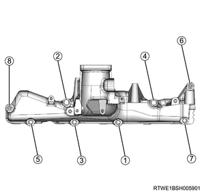
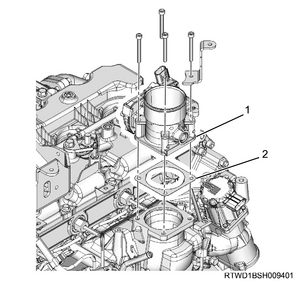
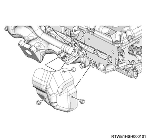

Inlet manifold installation (4JK1)
1. Inlet manifold installation
Note
- The following applies to models with an EGR.
1. Install the EGR pipe adapter to the inlet manifold.
Tightening torque： 25 N・m { 2.5 kgf・m / 18 lb・ft }

2. Install the gasket to the inlet manifold.
Caution
- Do not reuse the gasket.
3. Install the inlet manifold to the cylinder head.
Note
- Tighten the nuts and bolts in the order shown in the diagram.
Tightening torque： 25 N・m { 2.5 kgf・m / 18 lb・ft }

Note
- The following applies to models without EGR.
4. Install the gasket to the inlet manifold.
Caution
- Do not reuse the gasket.
5. Install the inlet manifold to the cylinder head.
Note
- Tighten the nuts and bolts in the order shown in the diagram.

2. EGR valve installation
Note
- The following applies to models with EGR.
1. Install the EGR valve to the inlet manifold.
Tightening torque： 27 N・m { 2.8 kgf・m / 20 lb・ft } Nut
Tightening torque： 24 N・m { 2.4 kgf・m / 18 lb・ft } Bolt
Caution
- Do not reuse the gasket.
3. EGR valve connect
Note
- The following applies to models with EGR.
1. Connect the connector to the EGR valve.
4. Injection pipe installation
1. Apply the engine oil to the injection pipe.
Note
- Apply engine oil to the injector side sleeve nut threaded portion and the O-ring of the injector.
2. Temporarily tighten the injection pipe to the injector and the common rail (fuel rail) assembly.
Note
- Temporarily tighten the sleeve nut by hand until the nut does not turn.

3. Temporarily tighten the clip to the injection pipe.
4. Securely tighten the injector clamp to the cylinder head.
Tightening torque： 26 N・m { 2.7 kgf・m / 19 lb・ft }
5. Securely tighten the injection pipe to the injector and the common rail (fuel rail) assembly.
Tightening torque： 29.5 N・m { 3.0 kgf・m / 22 lb・ft } Injector side
Tightening torque： 29.5 N・m { 3.0 kgf・m / 22 lb・ft } Common rail (fuel rail) side
Caution
- Do not reuse the injection pipe.
6. Securely tighten the clip to the injection pipe.
Tightening torque： 10 N・m { 1.0 kgf・m / 89 lb・in }
5. Vacuum hose connect
1. Connect the vacuum hose to the inlet manifold.
6. Leak off pipe installation
1. Install the harness bracket to the inlet manifold and the common rail (fuel rail) bracket.
2. Install the leak-off pipe to the inlet manifold.
Tightening torque： 25 N・m { 2.5 kgf・m / 18 lb・ft }

3. Connect the fuel leak-off hose to the leak-off pipe.
4. Connect the vacuum hose to the vacuum pipe.
7. Fuel leak-off hose installation
1. Install the fuel leak-off hose to the leak-off pipe.
8. Intake throttle valve installation
1. Install the gasket to the intake throttle valve.
Caution
- Do not reuse the gasket.
2. Install the intake throttle valve to the inlet manifold.
Tightening torque： 10 N・m { 1.0 kgf・m / 89 lb・in }

- Intake throttle valve
- Gasket
9. Intake throttle valve connect
1. Connect the connector to the intake throttle valve.
10. A/C compressor bracket installation
1. Install the A/C compressor bracket to the cylinder head.
Note
- Tighten in the order shown in the diagram.
Tightening torque： 25 N・m { 2.5 kgf・m / 18 lb・ft }

11. A/C compressor assembly connect
1. Install the A/C compressor assembly to the A/C compressor bracket.
Tightening torque： 51 N・m { 5.2 kgf・m / 38 lb・ft }

- A/C compressor bracket
- A/C compressor
12. A/C compressor drive belt installation
1. Install the A/C compressor drive belt to the pulley.

- A/C compressor drive belt
13. Oil level gauge guide tube installation
1. Apply the engine oil to the O-ring.
2. Install the oil level gauge guide tube to the crankcase.
Tightening torque： 25 N・m { 2.5 kgf・m / 18 lb・ft }
14. A/C compressor drive belt adjustment
1. Adjust tension to the specified value using a tension meter.
Note
- When adjusting the amount of flex to the original value
- Apply a load to measurement points 2, 3, and 4 of the A/C compressor drive belt and adjust the amount of flex.
Load： 98 N { 10 kg / 22 lb }
| Measurement point 2 | |
| Amount of flex | |
| For a new product | ： 12.4 to 16.4 mm { 0.488 to 0.646 in } |
| When reused | ： 16.5 to 19.1 mm { 0.650 to 0.752 in } |
| Measurement point 3 | |
| Amount of flex | |
| For a new product | ： 12.5 to 16.5 mm { 0.492 to 0.650 in } |
| When reused | ： 16.5 to 19.1 mm { 0.650 to 0.752 in } |
| Measurement point 4 | |
| Amount of flex | |
| For a new product | ： 15.9 to 20.7 mm { 0.626 to 0.815 in } |
| When reused | ： 20.7 to 23.7 mm { 0.815 to 0.933 in } |
Note
- When adjusting the tension by using a sonic tension meter
- Measure the frequency at measurement points 2, 3, and 4 with a sonic tension meter.
| Measurement point 2 | |
| Frequency | |
| For a new product | ： 92 to 112 Hz |
| When reused | ： 80 to 92 Hz |
| Measurement point 3 | |
| Frequency | |
| For a new product | ： 92 to 112 Hz |
| When reused | ： 79 to 91 Hz |
| Measurement point 4 | |
| Frequency | |
| For a new product | ： 70 to 86 Hz |
| When reused | ： 62 to 70 Hz |

- Measurement point 1
- Measurement point 2
- Measurement point 3
- Measurement point 4
- Adjust bolt (A/C compressor drive belt)
Note
- After adjusting the tension, tighten the tensioner fixing nut.
Tightening torque： 41 N・m { 4.2 kgf・m / 30 lb・ft }
15. EGR pipe installation
Note
- The following applies to models with an EGR.
1. Install the EGR pipe to the inlet manifold and the exhaust manifold.
Tightening torque： 27 N・m { 2.8 kgf・m / 20 lb・ft }
Caution
- Do not reuse the gasket.

16. Exhaust manifold heat protector installation
1. Install the exhaust manifold heat protector to the exhaust manifold.
Tightening torque： 25 N・m { 2.5 kgf・m / 18 lb・ft }

17. Turbocharger water feed pipe connect
1. Connect the turbocharger water feed hose to the water feed and return pipe.

- Turbocharger water feed hose
- Turbocharger water return hose
18. Intake air duct installation
1. Install the intake air duct to the turbocharger and the intercooler.
Caution
- Referring to the diagram, face the threaded portion of the clamp toward the engine front.
Tightening torque： 25 N・m { 2.5 kgf・m / 18 lb・ft } Nut, bolt
Tightening torque： 4 N・m { 0.4 kgf・m / 35 lb・in } Clamp (Turbocharger side)
Tightening torque： 5 N・m { 0.5 kgf・m / 44 lb・in } Clamp (Intercooler side)

19. Intake air duct installation
1. Install the intake air duct to the intake throttle valve and the intercooler.
Note
- Align the marks on the pipe side and hose side.
Tightening torque： 10 N・m { 1.0 kgf・m / 89 lb・in } Bolt
Tightening torque： 4 N・m { 0.4 kgf・m / 35 lb・in } Clamp (Intake throttle side)
Tightening torque： 5 N・m { 0.5 kgf・m / 44 lb・in } Clamp (Intercooler side)

20. Boost pressure sensor connect
1. Connect the connector to the boost pressure sensor.

21. Air cleaner assembly installation
1. Install the air cleaner assembly to vehicle.
Tightening torque： 20 N・m { 2.0 kgf・m / 15 lb・ft }

- Air cleaner assembly
- MAF sensor
- Vacuum hose
- Blow-by hose
- Intake pipe
- Barometric pressure sensor
2. Connect the intake pipe to the turbocharger assembly.
Tightening torque： 4 N・m { 0.4 kgf・m / 35 lb・in }
Note
- Install by aligning the alignment mark position as shown in the diagram.

- Alignment mark
3. Connect the vacuum hose to the air cleaner assembly.
4. Connect the harness connector to the barometric pressure sensor.
5. Connect the harness connector to the MAF sensor.
22. Coolant filling
1. Replenish the radiator with coolant.
Note
- Use the coolant contains 50 % anti-freeze solution.
- Pour coolant up to the filler neck.
2. Replenish the radiator reserve tank with coolant.
Note
- Pour coolant up to the MAX line.
3. Install the radiator cap to the radiator.
23. Engine cover installation
1. Install the engine cover to the engine.

- Engine cover
24. Battery ground cable connect
1. Connect the battery ground cable to the battery.
2. Close the engine hood assembly.